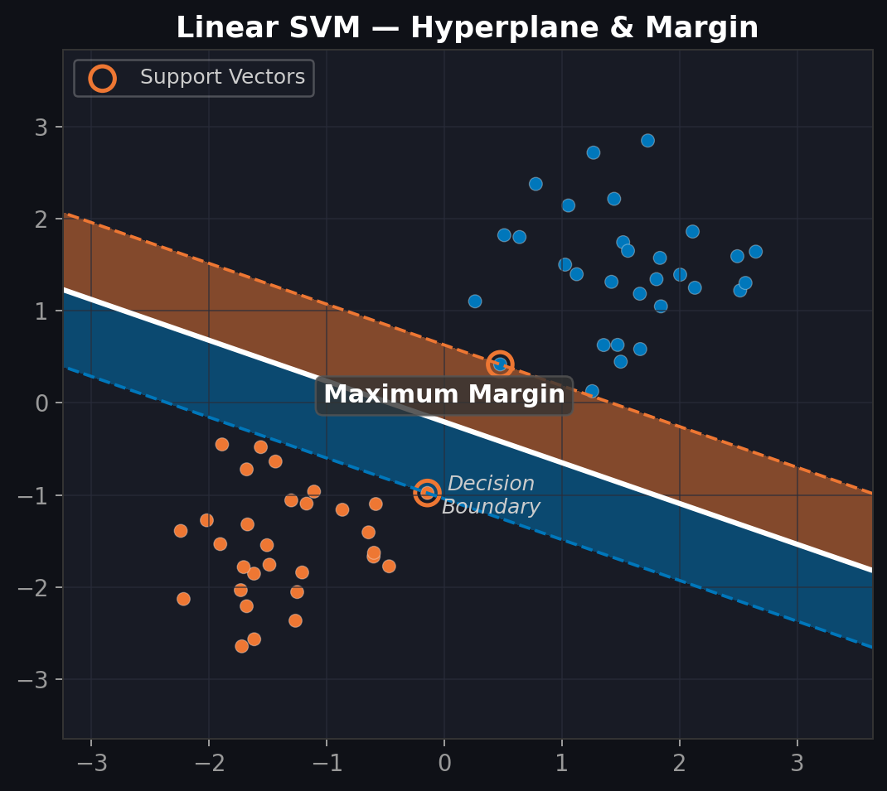
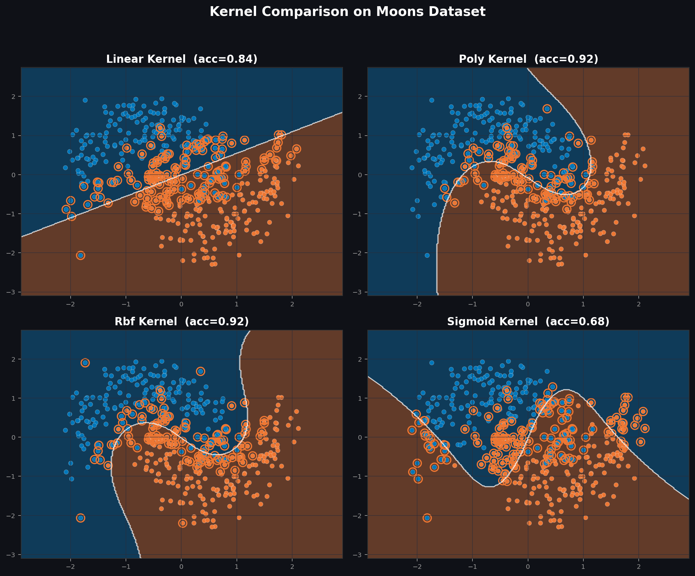
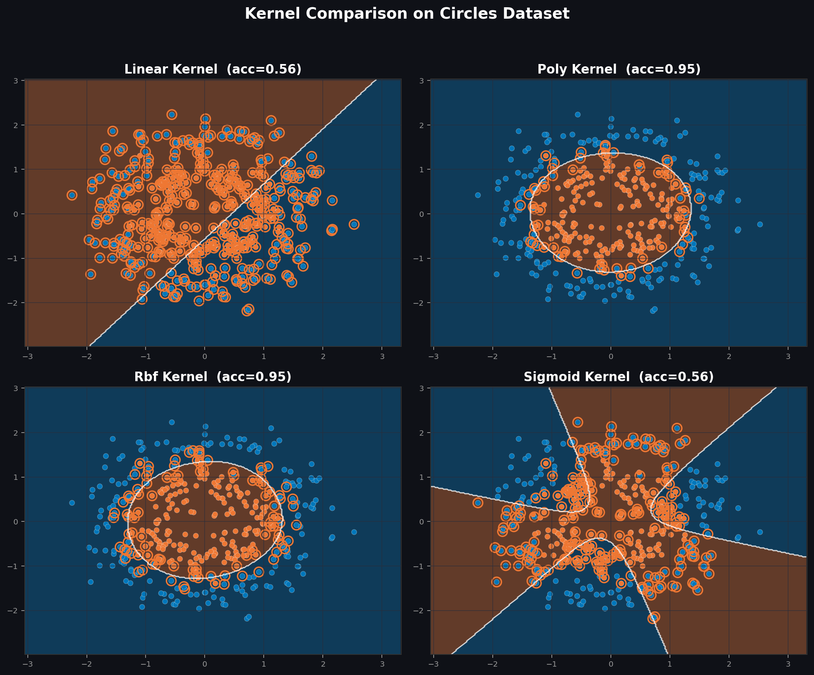
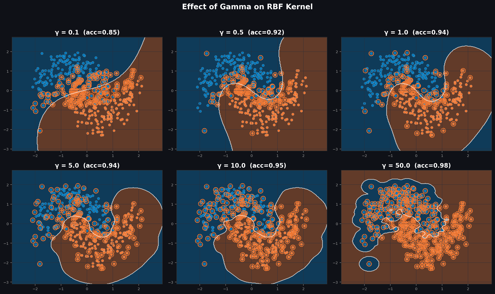
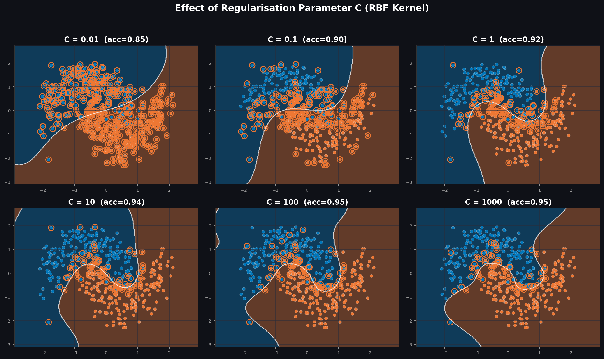
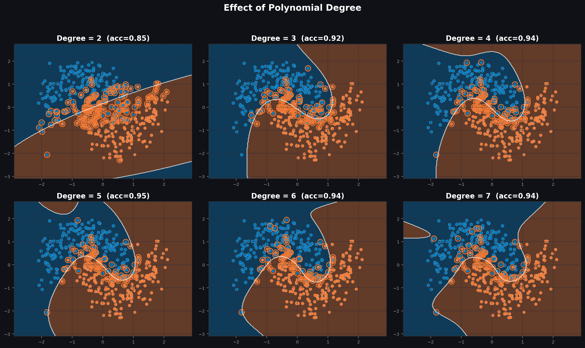
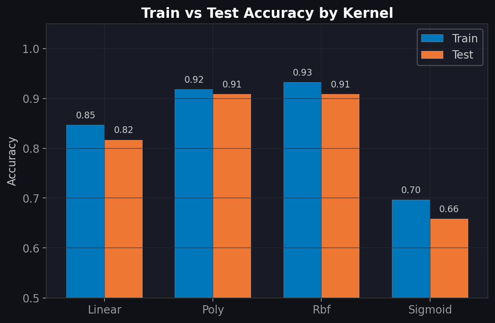
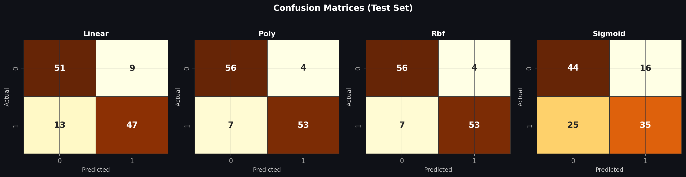
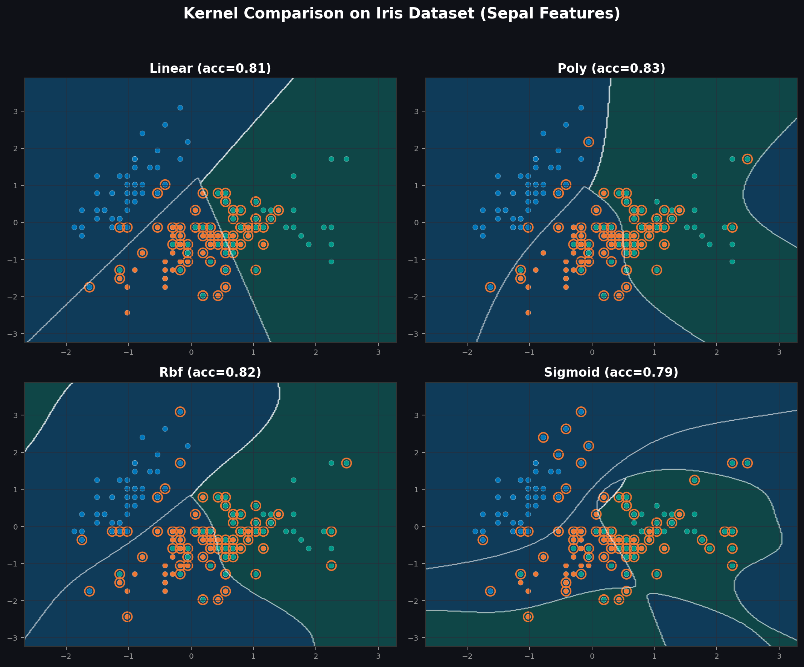

What Is a Support Vector Machine?
A Support Vector Machine (SVM) is one of the most elegant supervised learning algorithms in the machine-learning toolbox. First introduced by Vladimir Vapnik and his colleagues at Bell Laboratories in the early 1990s, SVMs have since become a cornerstone technique for classification and regression tasks across diverse domains, from text categorisation and image recognition to bioinformatics and financial modelling.
At its heart, the SVM algorithm searches for the optimal hyperplane that separates two classes of data points in feature space. What makes it special is the concept of margin maximisation: instead of finding just any boundary that separates the classes, the SVM finds the one that maximises the distance between the boundary and the nearest data points from each class. These critical boundary-neighbouring points are called support vectors, and they alone define the decision boundary. All other training points are irrelevant to the final model.

Mathematically, for training data (xi, yi) where yi ∈ {-1, +1}, the SVM optimisation problem is:
minimise ½ ||w||²
subject to yᵢ(w · xᵢ + b) ≥ 1 ∀ iThis elegant formulation has a powerful implication: the solution depends only on the dot products between data points, not on the data points themselves. This is precisely what opens the door to the kernel trick. The concept that makes SVMs truly exceptional.
The Kernel Trick is the key insight: instead of explicitly mapping data into a
higher-dimensional space (which could be computationally prohibitive or even infinite-dimensional),
we replace every dot product with a kernel function:
K(xᵢ, xˇ) = φ(xᵢ) · φ(xˇ). This allows SVMs to
learn non-linear decision boundaries while operating in the original feature space. The choice of
kernel function fundamentally changes what kind of boundaries the SVM can learn, and that is
precisely what this tutorial explores.
The Four Kernel Functions
Scikit-learn’s SVM implementation provides four built-in kernel functions, each producing a fundamentally different type of decision boundary. Understanding their mathematical formulations helps us predict when each kernel will excel or struggle.
Linear Kernel
K(x, y) = x · yProduces a straight hyperplane. Computationally the fastest and most interpretable kernel. Ideal when the data is linearly separable or when the number of features greatly exceeds the number of samples (e.g., text classification).
Polynomial Kernel
K(x, y) = (γx·y + r)dGenerates curved decision boundaries whose complexity is controlled by the polynomial degree d. Degree 2 gives elliptical boundaries; degree 3 and above can learn increasingly complex shapes. A good middle ground between linear and RBF.
RBF (Gaussian) Kernel
K(x, y) = exp(-γ||x-y||²)The most versatile and widely used kernel. It maps data into an infinite-dimensional feature space, enabling it to model arbitrarily complex boundaries. The γ parameter controls the “reach” of each data point’s influence; it is the single most important hyperparameter to tune.
Sigmoid Kernel
K(x, y) = tanh(γx·y + r)Inspired by the activation function in neural networks. However, it does not always satisfy Mercer’s condition (positive semi-definiteness), which means it is not guaranteed to produce a valid kernel. Use with caution. It often underperforms RBF in practice.
Visual Comparison: Decision Boundaries
To truly understand how each kernel behaves, we trained all four on scikit-learn’s
make_moons dataset, two interleaving half-circles with added Gaussian noise. This
dataset is deliberately not linearly separable, which exposes the strengths and weaknesses of
each kernel function.

What the Boundaries Reveal
The linear kernel is unable to separate the interleaving crescents. It draws a straight line through the middle, misclassifying a significant portion of both classes. The polynomial kernel (degree 3) curves the boundary and captures most of the moon shape, though not perfectly. The RBF kernel produces the smoothest, most accurate boundary, adapting precisely to the natural geometry of the data. The sigmoid kernel creates an unpredictable boundary that fails to capture the data structure, a consequence of it not always being a valid Mercer kernel.
The Circles Test: Where Linear Completely Fails
The circles dataset isolates one class entirely within the other, a scenario where no linear boundary can succeed. As expected, only the RBF kernel correctly classifies both the inner and outer rings. This dramatically illustrates why kernel choice is not merely a hyperparameter to tune but a fundamental architectural decision.

Interactive: See Gamma in Action
The γ (gamma) parameter in the RBF kernel controls the radius of influence of each training sample. Drag the slider below to see how the decision landscape changes in real time as gamma varies from smooth underfitting to extreme overfitting:
RBF Kernel : Live Gamma Visualisation
Drag the slider to change γ and observe how the decision regions morph. Low gamma produces broad, overlapping influence zones (underfitting). High gamma creates tight, isolated islands around each point (overfitting).
How to read this: Blue regions indicate areas where the model predicts Class A; coral/orange regions indicate Class B. As you increase gamma, notice how the regions fragment into smaller islands centred on individual data points, a classic sign of overfitting. A gamma value around 1.0-3.0 typically produces the best generalisation for this dataset.
Parameter Tuning Deep Dive
Choosing the right kernel is only half the battle. Each kernel has hyperparameters that dramatically affect the model’s behaviour. Here we examine the three most critical parameters: gamma, C (regularisation), and polynomial degree.
The Gamma Parameter (γ)
For the RBF kernel, gamma defines how quickly the influence of a training point decays with distance. With low gamma, each point has a wide sphere of influence, leading to smooth, generalised boundaries. With high gamma, points have narrow influence, producing complex boundaries that wrap tightly around training data, a recipe for overfitting on unseen data.

Overfitting alert: At γ=50, the model achieves near-perfect training accuracy but would fail spectacularly on new data. This is a textbook example of the bias-variance trade-off. Always evaluate gamma using cross-validation on a held-out set.
The Regularisation Parameter (C)
The C parameter controls the penalty for misclassifying training points. A
small C allows a wider margin with more violations (soft margin), producing a simpler model. A large C
penalises every training error, forcing the boundary to twist and turn to correctly classify every
point, potentially at the cost of generalisation.

Polynomial Degree
For the polynomial kernel, the degree parameter determines the maximum curvature of the boundary. Degree 2 produces elliptical regions; degree 3 introduces inflection points; degrees 5+ create highly irregular boundaries that are prone to overfitting and numerical instability.

from sklearn import svm
from sklearn.model_selection import GridSearchCV
# Define the parameter grid for systematic tuning
param_grid = {
'C': [0.1, 1, 10, 100],
'gamma': ['scale', 0.1, 0.5, 1, 5],
'kernel': ['rbf']
}
# 5-fold cross-validation grid search
grid = GridSearchCV(
svm.SVC(), param_grid,
cv=5, scoring='accuracy', refit=True
)
grid.fit(X_train, y_train)
print(f"Best params: {grid.best_params_}")
print(f"Best CV accuracy: {grid.best_score_:.3f}")Quantitative Results & Analysis
To evaluate generalisation performance, we split the moons dataset 70/30 into training and test sets (random_state=42 for reproducibility). Each kernel was trained on the training set and evaluated on the unseen test set.


Real-World Validation: The Iris Dataset
We extended our analysis to Fisher’s classic Iris dataset (1936) using only the sepal length and sepal width features, creating a challenging 3-class classification problem. The results reinforce our findings, the RBF kernel handles the overlapping class boundaries most effectively, followed by the polynomial kernel. The linear kernel creates straight-line partitions that inevitably misclassify the overlapping central region.

Summary Comparison
| Criterion | Linear | Polynomial | RBF (Gaussian) | Sigmoid |
|---|---|---|---|---|
| Best for | Linearly separable data, high-dimensional sparse data | Moderate non-linearity, image features | Complex non-linear patterns, general-purpose | Niche, neural-net-style activations |
| Computational speed | Fastest | Moderate | Moderate | Moderate |
| Overfitting risk | Low | Medium (degree-dependent) | Medium-High (gamma-dependent) | Unpredictable |
| Key hyperparameters | C | degree, coef0, C | gamma, C | gamma, coef0, C |
| Mercer’s condition | Always valid | Always valid | Always valid | Not guaranteed |
Practical recommendation: When in doubt, start with the RBF kernel. It is the
most versatile choice. Use GridSearchCV or RandomizedSearchCV to
systematically find the optimal C and gamma values. Only switch to a linear kernel if you need
faster training, better interpretability, or if your feature count greatly exceeds the sample count.
References & Further Reading
- Cortes, C. & Vapnik, V. (1995). Support-vector networks. Machine Learning, 20(3), 273-297. doi:10.1007/BF00994018
- Boser, B. E., Guyon, I. M. & Vapnik, V. N. (1992). A training algorithm for optimal margin classifiers. Proc. 5th Annual Workshop on Computational Learning Theory (COLT), 144-152.
- Schölkopf, B. & Smola, A. J. (2002). Learning with Kernels: Support Vector Machines, Regularization, Optimization, and Beyond. MIT Press.
- Hsu, C.-W., Chang, C.-C. & Lin, C.-J. (2003). A practical guide to support vector classification. Technical report, National Taiwan University.
- Scikit-learn Developers (2023). Support Vector Machines documentation. scikit-learn.org
- Raschka, S. (2015). Python Machine Learning. Packt Publishing. ISBN 978-1783555130.
- Pedregosa, F. et al. (2011). Scikit-learn: Machine Learning in Python. Journal of Machine Learning Research, 12, 2825-2830.
- Fisher, R. A. (1936). The use of multiple measurements in taxonomic problems. Annals of Eugenics, 7(2), 179-188.
GitHub Repository: https://github.com/muzamilahmad7/Machine-Learning-Tutorial • License: MIT